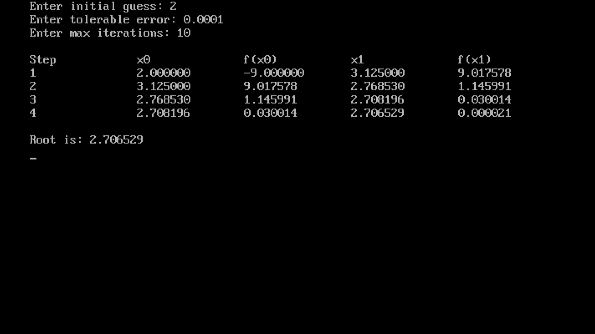

ADDITION OF TWO NUMBER
#include <stdio.h> #include <conio.h> #include <math.h> #define f(x) (x * x * x - 4 * x - 9) #define g(x) (3 * x * x - 4) void main() { int step = 1, x; float x0, x1, f0, g0, f1, e; clrscr(); printf("Enter initial guess: "); scanf("%f", &x0); printf("Enter tolerable error: "); scanf("%f", &e); printf("Enter max iterations: "); scanf("%d", &x); printf("\nStep\t\tx0\t\tf(x0)\t\tx1\t\tf(x1)\n"); f1 = f(x0); do { g0 = g(x0); f0 = f(x0); if (g0 == 0.0) { printf("\nError: Division by zero.\n"); exit(0); } x1 = x0 - f0 / g0; f1 = f(x1); printf("%d\t\t%f\t%f\t%f\t%f\n", step, x0, f0, x1, f1); x0 = x1; step++; if (step > x) { printf("Not Convergent within %d iterations\n", x); exit(0); } } while (fabs(f1) > e); printf("\nRoot is: %f\n", x1); getch(); }
Output
Code
